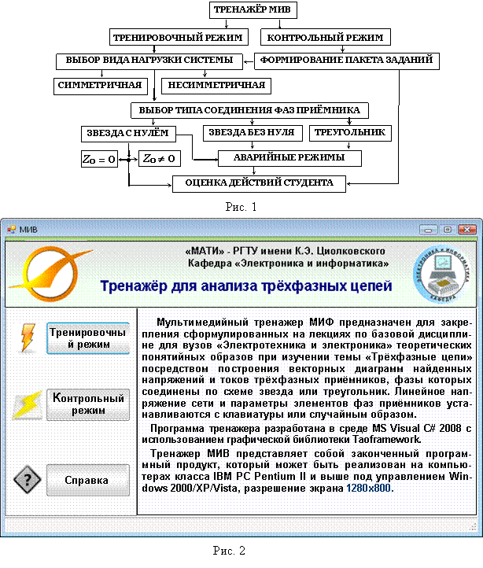
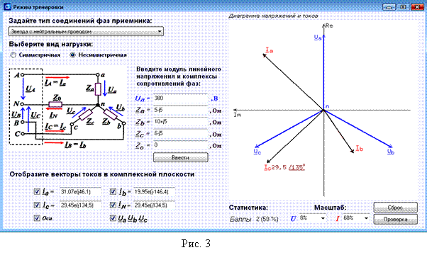

2. ОБЩАЯ ХАРАКТЕРИСТИКА ТРЕНАЖЁРА МИВ
Виртуальный мультимедийный тренажёр МИВ предназначен для приобретения навыков построения векторных диаграмм напряжений и токов трёхфазных приёмников при соединении их фаз звездой или треугольником в различных (в том числе и в аварийных) режимах их работы.
Тренажер разработан с использованием программной среды Microsoft Visual 2008 C#, предоставляющей набор инструментов для создания Web-приложений, в частности:
· удобный синтаксис, похожий на синтаксис языка С++;
· средства для создания объектной модели, заимствованные из языка Java;
· средства среды C++ Builder для построения оконных приложений;
· безопасный код.
Структура тренажёра МИВ представлена на рис. 1, а его стартовая страница - на рис. 2. Тренажёр функционирует в двух режимах: в тренировочном и в контрольном.
При выборе тренировочного режима работы студент в интерфейсном окне выбирает схему соединения фаз приёмника (звезда или треугольник), тип нагрузки (симметричный или несимметричный приёмник), вводит модуль линейного напряжения трёхфазной цепи и комплексы сопротивлений фаз, а рассчитав комплексы фазных напряжений, фазных и линейных токов, строит (с помощью мыши) векторную диаграмму электрических величин в комплексной плоскости. В этом режиме оценивается (в баллах) каждое действие студента: при правильной установке модуля и аргумента комплекса напряжения или тока (при отклонении от эталона модуля комплексной величины не более, чем на ±3 % и его аргумента (начальной фазы) не более, чем на ±3˚) выводится на экран +1 балл, и 0 (не начисляются баллы) при неверном выполнении задания. С помощью кнопки Сброс можно аннулировать предшествующее действие и повторить его заново. Такую процедуру можно проделывать многократно с каждым вектором, добиваясь правильного его расположения в диаграмме электрических величин в комплексной плоскости.
В
контрольном режиме тестовые задания задаются преподавателем, а значение
линейного напряжения и сопротивлений фаз приёмника выбираются случайным образом
из последовательностей заданных в программе чисел.

В интерфейсе задания (рис.
3) при вводе курсора мыши в окно комплексной плоскости выводится вектор тока Ia со случайной длиной и углом
поворота по отношению к оси действительных чисел Re, направленной вертикально. Вектор
тока "закрепляется" за курсором мыши и следует (вращается) за его
перемещением в комплексной плоскости. После расчёта и установки необходимой
длины (модуля комплекса тока Ia) и аргумента Ya (угла поворота) и щелчка левой
клавишей мыши, вектор фиксируется на выбранном радиусе. При завершении работы
на экран дисплея выводятся только результирующие показатели учебных достижений
студента на данном этапе обучения (в баллах и в процентах к общему количеству
правильных действий (операций действия)).
Особенность тренажёра МИВ заключается в предоставлении студенту самостоятельно проводить манипуляции с векторами, отображающими синусоидально изменяющиеся во времени электрические величины (напряжения и токи) в трёхфазных электрических цепях, при построении векторных диаграмм, и в оценке правильности или ошибочности выполняемых действий.
Аварийные режимы (короткие замыкания и обрывы фаз) реализованы посредством ввода в соответствующие поля интерфейса предельных значений модулей сопротивлений фаз трёхфазных приёмников. Так, режим короткого замыкания (КЗ) фазы установлен при модуле Zф ≤ 0,1 Ом (в том числе при Zф = 0), а обрыв фазы при Zф ≥ 2∙107 Ом. Так, при КЗ, например, фазы "а" при соединении фаз приёмников по схеме звезда с нейтральным проводом при щелчке мышью на кнопке "Ввести", после анализа введенных значений сопротивлений фаз, выводится заставка "У Вас КЗ фазы а. Перегорает предохранитель и ток Ia = 0. "ОК". Аналогичные заставки всплывают при КЗ и обрыве других фаз, при этом расчёт электрических величин проводится только для неаварийных участков схемы.